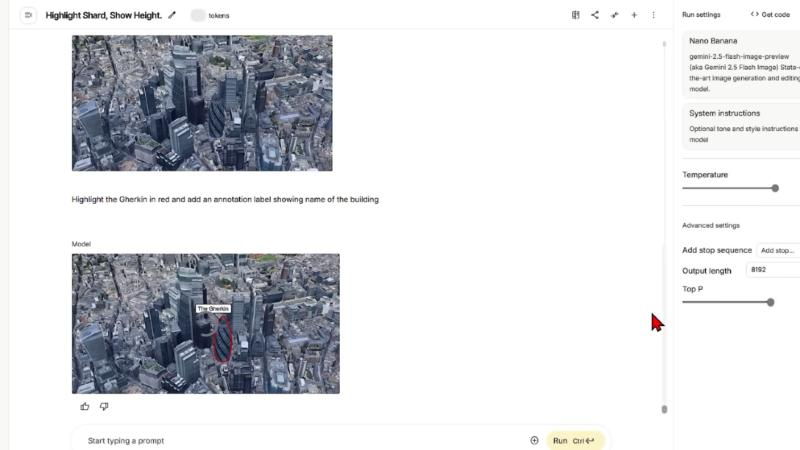
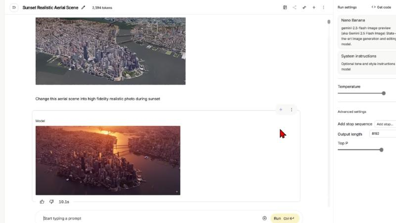
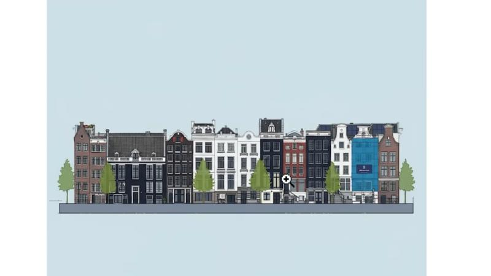
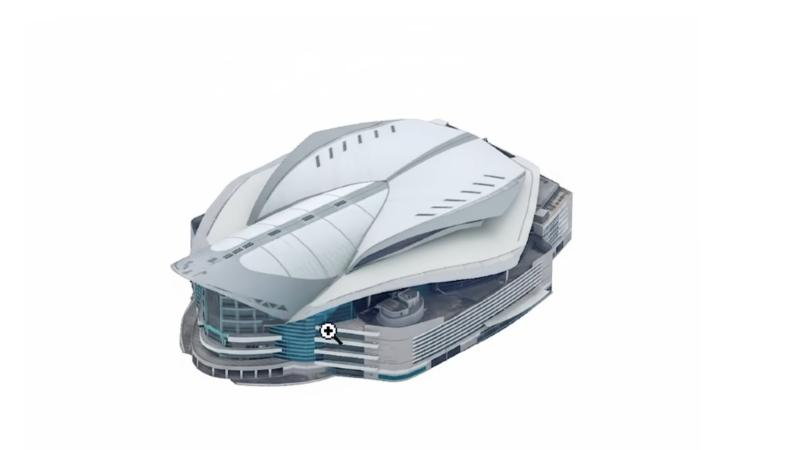
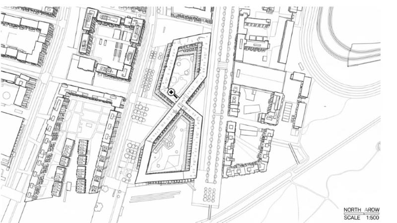

Google Earth is a serious geospatial tool with one obvious weakness: the imagery looks like imagery, not like architecture. Pair it with an image model and you can extract, transform and recreate real places — either to drop a design into context, or to pull world information out and into your drawings.
Six workflows, in rough order of how well they hold up. Everything here uses a screenshot — the snipping tool is fine — into Nano Banana in Google AI Studio. Other models work the same way.
1. Annotate real buildings
Famous buildings the model recognises by name. Screenshot central London and:
Highlight the Shard in a red outline and add an annotation showing the height in metres.
It outlined the building and gave 310 m, which checks out. The Gherkin, in a dense cluster of towers, got picked out correctly too.

This only works for buildings with a public identity. On ordinary buildings the results vary, and you have to identify them by position relative to something else in the frame — "the corner building opposite the station" — rather than by name.
You can style the annotations too. Feed it a reference and ask for, say, a location-based AR info-app look, and you get a coloured callout box instead of a plain label.
2. Weather, light and time of year
Google Earth's 3D context is useful and its render quality is poor, particularly close up. This is the easiest win of the six.
Change this aerial scene to a high-fidelity realistic photo during sunset.

Then vary it: early morning fog, midday winter snow. Two practical notes from this run — fog and snow prompts tend to overdo it (the snow became a complete blizzard and obscured everything, so prompt it down), and the results are noticeably better from a lower, closer angle than from a high aerial.
Useful for showing a scheme across seasons without rendering anything.
3. Clean elevations from a street
Sometimes you need 2D for context drawings. A canal-side row in Amsterdam, full of boats, water and detail you do not want:
Create an architectural elevation from the front row of these buildings in the reference.

On a well-exposed, well-resolved row this is genuinely good — colours, window patterns and the order of the buildings all match.
Pushed harder it degrades. The same prompt on low-resolution temples in Kyoto, with trees in the way, produced four elevations where the outer two roughly matched and the middle two were generic invention. Fine for a diagram, not for anything measured. Focus on a smaller area and give multiple angles if you need accuracy.
4. Isometric cut-outs — and then real 3D
The most reliable of the six. A complex building in Hong Kong, surrounded by clutter:
Create a clean rendered isometric model with no background of the main building in this reference image.

It removed the background completely and kept the form and detail without distortion — repeatedly, across several complicated buildings. That matters because a clean isometric on white is exactly the input an image-to-3D generator wants. Run it through Meshy or Hunyuan 3D and you have geometry you can take into your 3D software.
5. Site plans as CAD line drawings
Top-down view, map set to north, then:
Create a simplified architectural CAD line site roof plan drawing around the main buildings in this reference image.

It kept the building layouts and even the street detail, and added line weights to distinguish the subject from its context — which is a genuinely considered drawing decision.
One flaw to prompt around: it keeps some perspective on the buildings. Nano Banana likes to add it. Say explicitly that you want a 2D drawing, not a perspective plan.
Zoom to a single building and ask for a ground floor plan and it has to invent, because it cannot see inside. The outline and the orientation of the walls come out sensibly; the layout is guesswork. Use this for site plans, not for internal arrangements.
6. Dropping a design into context
The one with the most promise and the least control. Screenshot the district, scribble a red zone where the building goes in any paint tool, and supply your building image with a clear background:
Paste the reference of this building in the red area facing the main road.

It blended into the scene, oriented itself correctly to the street frontage, and kept the plot outline.
It is also hit and miss. Exact positions are hard to describe in words, and sometimes it ignores the red outline entirely. Good for a quick first test; in-painting gives you more control when it matters.
How they rank
| Workflow | Reliability | Use it for |
|---|---|---|
| Isometric cut-out | High | Diagrams, and as input to image-to-3D |
| Weather and light | High | Season and time-of-day studies |
| Elevations | Medium | Clear, well-resolved rows only |
| CAD site plan | Medium | Site plans — say "not a perspective" |
| Annotation | Medium | Famous buildings; verify the facts |
| Design insertion | Low | Quick first tests |
The pattern across all six: the model is good at seeing and restyling, and unreliable the moment it has to invent. Keep it on the first job and check anything it tells you — the Shard's height was right, and it was worth looking up.